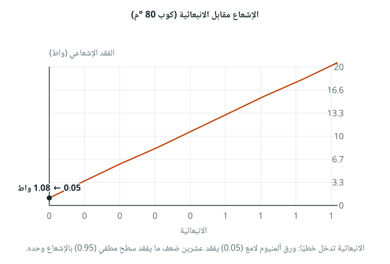

ورق الألمنيوم على الكوب: كيف يوقف الإشعاع؟
حرّك الانبعاثية وشاهد الفقد الإشعاعي. محاكاة تعليمية لا قياس فيزيائي حقيقي.
محاكاة تعليمية لا قياس فيزيائي حقيقي: الأرقام تُحسب من النموذج لحظيًا، ولا تُقاس بأدوات منزلية.
افتراضات النموذج والمصدر
q = ε · σ · A · (T⁴ − T_s⁴)
سطح رمادي بحرارة منتظمة
محيط كبير عند 25 °م
الإشعاع مفصول عن الحمل
لفّ كوبًا بورق ألمنيوم لامع من الخارج واترك الثاني عاريًا، واملأ الاثنين بماء ساخن متساوٍ. سجّل الدرجة كل دقيقتين لعشر دقائق. الكوب الملفوف يبرد أبطأ، والسبب ليس أن الورق «سميك» بل أن سطحه اللامع يشعّ أقل.
كل سطح دافئ يشعّ طاقة بمعدل يتناسب مع انبعاثيته ومع الفرق بين حرارة السطح الرابعة وحرارة المحيط الرابعة. الألمنيوم المصقول انبعاثيته منخفضة جدًا (نحو 0.05)، والورق المطفي أو الطلاء نحو 0.95 — فرق عشرين ضعفًا في الفقد الإشعاعي عند الحرارة نفسها.
ما لا يُقاس منزليًا: الانبعاثية بوحدة مجردة (تحتاج مطيافًا). والنموذج يفصل الإشعاع وحده، بينما الكوب الحقيقي يفقد حرارة بالحمل والتوصيل أيضًا؛ لذلك يبدو أثر الورق في التجربة أصغر من الرقم المحسوب.
كيف تعمل الظاهرة؟
الأجسام الدافئة تُطلق موجات كهرمغنطيسية في نطاق تحت الأحمر. سطح لامع يعكس معظم ما يصله ويعيد إشعاعه بضعف، فيبرّد ببطء؛ سطح خشن داكن يمتص ويشعّ بكفاءة.
العلاقة بالأرقام
q = ε·σ·A·(T⁴−T_s⁴). عند ε=0.05 و A=0.05 م² و 80 °م مقابل 25 °م: q=1.08 واط. وعند ε=0.95: 20.61 واط. الفرق نحو خمسة عشر ضعفًا من المساحة نفسها والفرق الحراري نفسه، أي أن الانبعاثية وحدها هي المتغير الحاكم.
مفاهيم متقاربة
يُخلط بين «العزل الحراري» و«العزل الإشعاعي»: الأول يقلّل التوصيل والحمل بمواد رديئة التوصيل، والثاني يقلّل الإشعاع بأسطح عاكسة — وورق الألمنيوم يعمل بالثاني.
حدود التطبيق
النموذج يفترض جسمًا رماديًا بحرارة منتظمة وسطحًا محيطًا كبيرًا. لا يصلح لسطوح انتقائية الطول الموجي، ولا يفصل نصيب الحمل والتوصيل في الكوب الحقيقي.

| الكمية | القيمة | المصدر |
|---|---|---|
| الفقد الإشعاعي عند انبعاثية 0.05 | 1.08 واط | [1] |
| الفقد عند انبعاثية 0.95 | 20.61 واط | [1] |
| ثابت ستيفان–بولتزمان | 5.670×10⁻⁸ W/(m²·K⁴) | [2] |
المصادر
- 1 Stefan–Boltzmann law — Wikipedia. en.wikipedia.org/wiki/Stefan%E2%80%93Boltzmann_law · اطُّلع عليه 2026-11-19
- 2 Emissivity of common materials — The Engineering ToolBox. www.engineeringtoolbox.com/emissivity-coefficients-d_447.html · اطُّلع عليه 2026-11-19
راجعه: عبدالله الهويدي — مراجعة في تطبيق انفراد · 2026-11-19 · آخر تحديث 2026-11-19
رجوع إلى المعمل